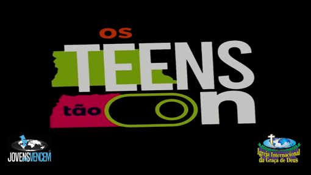
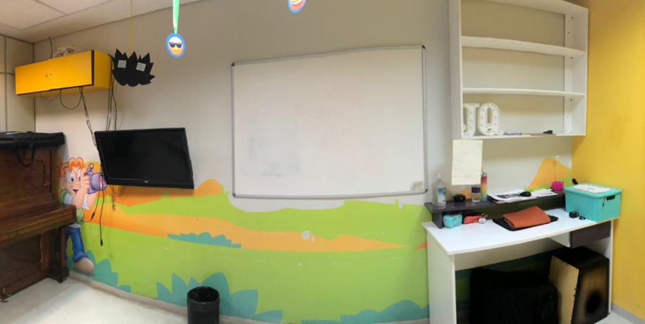
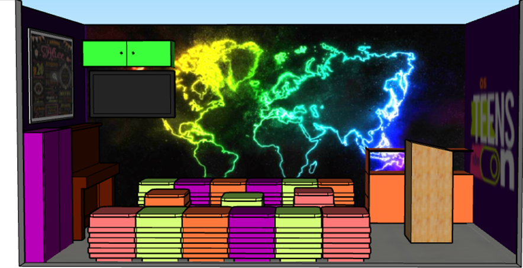
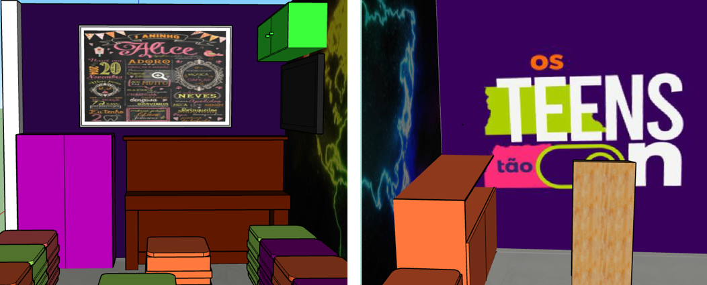

TEENS
Explore o universo das cores, suas propriedades físicas, percepção visual e aplicações na arte, design e tecnologia.
Explore o universo das cores, suas propriedades físicas, percepção visual e aplicações na arte, design e tecnologia.

O projeto de reforma da sala dos Teens é uma iniciativa comunitária e solidária desenvolvida por Eryka Lima, com o objetivo de transformar o ambiente em um espaço mais acolhedor, moderno e funcional para os adolescentes. A proposta busca não apenas melhorar a estrutura física do local, mas também criar um ambiente que estimule a convivência, o aprendizado, a criatividade e a participação ativa dos jovens nas atividades.

A nova sala foi pensada com uma identidade visual mais atual, utilizando cores mais vibrantes e
elementos que transmitem energia, leveza e pertencimento. O espaço será reorganizado para oferecer mais
conforto, melhor aproveitamento da área e maior interação entre os participantes.
Além disso, o projeto valoriza o aspecto comunitário e solidário, envolvendo apoio voluntário e
colaboração de pessoas comprometidas com o bem-estar dos adolescentes. Cada detalhe foi planejado com
cuidado, desde a escolha das cores até a disposição dos móveis, visando um ambiente funcional e
inspirador.
Mais do que uma simples reforma, este projeto representa um investimento no futuro dos jovens,
proporcionando um espaço onde eles possam se sentir incluídos, motivados e valorizados.


MINHA REFORMA
Objetivo:
Estimular criatividade, planejamento, noção de espaço, organização e resolução de problemas através
da criação de um projeto de reforma residencial.
Descrição da atividade
Você recebeu a missão de reformar um cômodo da sua casa (quarto, sala, cozinha ou banheiro). Sua
tarefa é planejar toda a reforma como se fosse um verdadeiro arquiteto.
Etapas da atividade
1. Escolha o ambiente
Escolha um cômodo da sua casa que você gostaria de reformar.
( ) Quarto
( ) Sala
( ) Cozinha
( ) Banheiro
2. Problemas do ambiente atual
Descreva o que precisa ser melhorado:
Exemplos:
Falta de espaço
Cores antigas ou sem vida
Iluminação ruim
Organização difícil
3. Ideia da reforma
Explique como você gostaria que o ambiente ficasse após a reforma.
Quais cores você usaria?
Como seria a decoração?
O que mudaria nos móveis?
4. Desenho do projeto
Faça um desenho do antes e depois do ambiente.
Lado 1: como é hoje
Lado 2: como você quer que fique